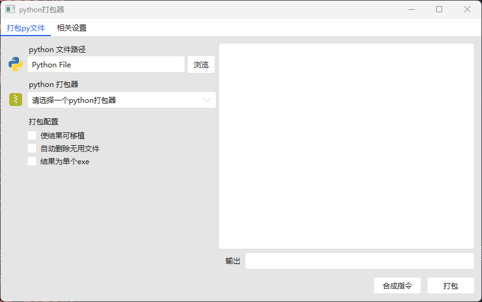
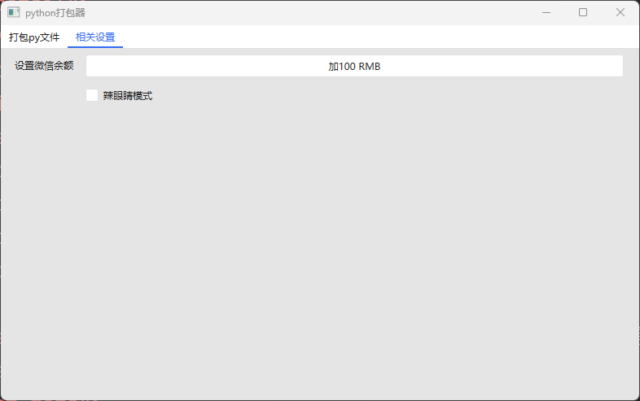

PTP
C#
.NET
WPF
python
这是一个python打包工具,使用C#（WPF)完成编写，目前还是测试版本。他将打包需要的工具和配置信息采用GUI表示出来，降低门槛和简化使用
一下是界面图片:


下载适用于win10/11的测试版 前往github
这是一个python打包工具,使用C#（WPF)完成编写，目前还是测试版本。他将打包需要的工具和配置信息采用GUI表示出来，降低门槛和简化使用
一下是界面图片:


下载适用于win10/11的测试版 前往github